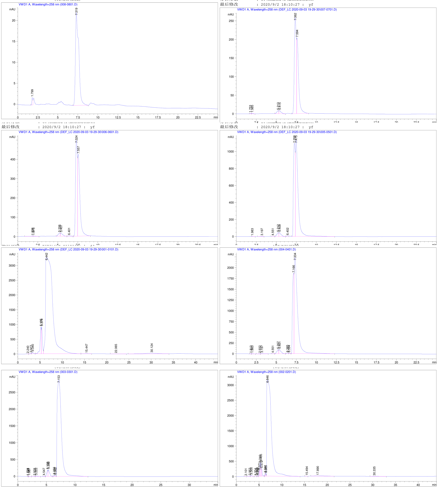

3.4. 利用Matlab自动化求解液相出峰时间¶
背景说明：液相色谱虽然为最常见的实验方法，但很多情况下，由于无法获得好的标准样品，导致液相结果非常的繁杂。在这种情况下，开发一种智能化的方法非常的必要。本案例以分析苄基丙酮为例。
提取码：5b5c
3.4.1. 1. 检测过程与结果¶
将购买的试剂分配稀释至1,0.5,0.2,0.1,0.05,0.02,0.01,0.001，然后分别进行检测。检测数据和图像如下：
3.4.2. 2. 解题思路¶
我们选择所有样品同一个出峰时间的峰高、峰面积等数据（如时间差<0.15s)。计算其所有可能的组合，然后以峰高（峰面积）为x，浓度为y，计算组合的R2，选择R2最大的组合即为目标值。
Res={};
for i =1:7 %data1...data7为实验结果，data8明显有误，故不添加。
eval(sprintf('data=data%d(:,2);',i)); %利用字符串进行循环
po=find(data>5 & data<6); %设定选定时间
po;
eval(sprintf('Res{i}=data%d(po,:);',i));
end
Res2={};
Res3={};
Ord={};
Num=0;
for i1 =1:size(Res{1},1)
for i2=1:size(Res{2},1)
for i3=1:size(Res{3},1)
for i4=1:size(Res{4},1)
for i5=1:size(Res{5},1)
for i6=1:size(Res{6},1)
for i7=1:size(Res{7},1)
Num=Num+1;
Res2{Num}=[Res{1}(i1,3),Res{2}(i2,3),Res{3}(i3,3),Res{4}(i4,3),Res{5}(i5,3),Res{6}(i6,3),Res{7}(i7,3)];
%获得每个组合的峰面积
Res3{Num}=[Res{1}(i1,4),Res{2}(i2,4),Res{3}(i3,4),Res{4}(i4,4),Res{5}(i5,4),Res{6}(i6,4),Res{7}(i7,4)];
%获得每个组合的峰高
Ord{Num}=[Res{1}(i1,2),Res{2}(i2,2),Res{3}(i3,2),Res{4}(i4,2),Res{5}(i5,2),Res{6}(i6,2),Res{7}(i7,2)];
%记录每个组合的出峰时间
end
end
end
end
end
end
end
for i =length(Ord):-1:1
po2=nchoosek([1:7],2); %求解一个组合中所有时间的间隔
Ord2=Ord{i};
data=Ord2(po2);
data=abs(data(:,2)-data(:,1));
po3=sum(find(data>0.15)); % 如果一个组合中，任一两个样本的时间间隔>0.15，则认为组合不合格，因而去掉
if po3>0
Res2(i)=[];
Res3(i)=[];
Ord(i)=[];
end
end
subplot(1,2,1) %以两画面的形式展示
Zheng=[]
for i=1:length(Res2)
R=corrcoef(Res2{i},y);
R=R(2).^2;
Zheng(i)=R;
end
bar(Zheng) %峰面积关系图
subplot(1,2,2)
Zheng2=[]
for i=1:length(Res3)
R=corrcoef(Res3{i},y);
R=R(2).^2;
Zheng2(i)=R;
end
bar(Zheng2) %峰高关系图
用户留言